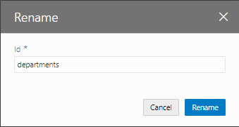
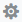
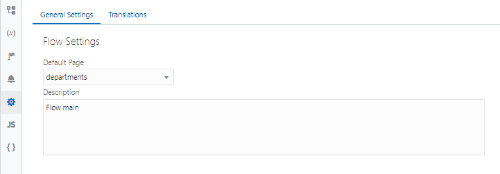

ページの名前の変更
このパートではここまでに、次の3つのページを新たに作成しました。
- CreateDepartment（部門レコードの作成） -- ビジネス・オブジェクト Department のレコードを作成
- Employees（従業員一覧） -- ビジネス・オブジェクト Employee の一覧を表形式で表示
- CreateEmployee（従業員レコードの作成） -- ビジネス・オブジェクト Employee のレコードを作成
これらのページにあわせて、main-start ページの名前を Departments に変更してみます。
-
アーティファクト・ブラウザの 「Web Applications」
 タブ・ページで 「HRWebApp」 → 「flows」 → 「main」 ノードを展開し、 「main-start」 ページを右クリックします。
タブ・ページで 「HRWebApp」 → 「flows」 → 「main」 ノードを展開し、 「main-start」 ページを右クリックします。 -
「Rename」 ダイアログ・ボックスが表示されたら、 「Id」 を
main-startからdepartmentsに変更し、 「Rename」 ボタンをクリックします。
-
アーティファクト・ブラウザで、main-start ページが departments に変更されていることを確認します。

-
アーティファクト・ブラウザの 「Web Applications」
タブ・ページで 「HRWebApp」 → 「flows」 → 「main」 をクリックし、

（Settings）をクリックします。
「Default Page」 で、 「departments」 が選択されていることを確認します。
以上で、パート3は完了です。